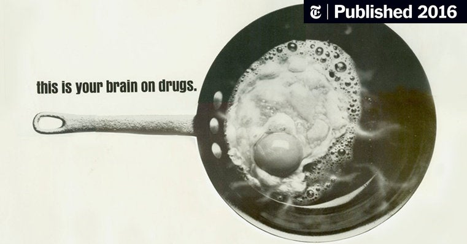

INDEX
Fried Egg

Fried eggs are considered to be PARTof a healthy breakfast! It's eggin' time!
Ingredients
- Egg
- EXACTLY 15.51111515155155151 mL of Butter
- Salt?
Sometimes I make a fried egg in the morning, but also sometimes I don't... really depends, I guess?
It is easier to just make cereal. I like miniwheats but I get made fun of because my roommate considers
it to be "old man" cereal even though I'm 25, and really that doesn't seem very old to me. But that depends on perspective, doesn't it? I bet My 4 year old Niece probably considers me to an old wretched thing. At least I know what 12 + 3 is. Get ratioed kid
- Crank element to 11
- toss in measured butter
- Crack open egg
- Add a pinch of salt
- Embrace despair, your egg is burnt into your element.... you forgot the skillet.